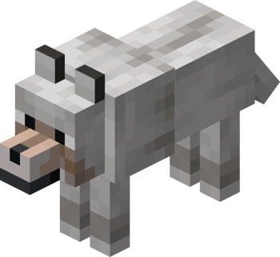

Top Animales favoritos del Minecraft
En minecraft existen animales ya sea para cuidar (lobos, gatos, loros), para obtener recursos(vacas, ovejas, conejos) o simplemente para existir (pandas, osos polares, ajolotes). A continuación se mostrará los 3 animales favoritos de la comunidad:
Lobo
Pollo